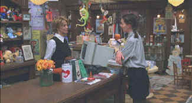

You've Got
Mail(SE)/B+,A
|
Warner/1997/120m/ANA
1.85 |
Is there
a better time to see You've Got Mail than Spring? I doubt it. The flowers are
blooming, the bees are buzzing and love is in the air. The charming updating of The Shop Around the Corner is a
love letter to New York. It's sentimental, sweet, touched by a back palette bitter edge of
reality.
There's a classic story of the little
guy and the big guy here, but it is relegated to the background. Don't expect any dramatic
sling shots. That's a great strength of You've Got Mail. Yes, it's blatantly
sentimental, but it's about romance and sunshine and love, not about business. The focus
is love.
|

|
Meg Ryan runs The Shop Around the Corner©Warner |
Kathleen Kelly owns a
charming West Side Manhattan children's book shop left to her by mother who founded the
landmark store. It's called The Shop Around the Corner, a brilliant nod to the film that
inspired You've Got Mail. But a heartbeat away, just down the block, Fox Books is
building a superstore. Run by third generation hard-nosed businessman Joe Fox, the new
store a la Barnes and Noble or Borders uses deep discounts and aggressive marketing to
smother the competition. Kathleen's shop, once sheltered by the shadows of New York's
skyscrapers, is now threatened by the sweep of marketing.
The delicious complication is that Kathleen is having an e-mail affair
with Joe, without either of them knowing the identity of the other. There are probably too
many shots of laptop computer screens with voiced over e-mail exchanges, but the dialogue
is consistently pithy and our knowledge of Kathleen and Joe's other relationship enhances
the pleasure of watching them romance each other in the blind.
What can you say about the combination of Tom
Hanks and Meg Ryan. There's definitely
fine chemistry there. Both are gifted comedians. Ryan's physical comedy is splendid. She
can make the most natural motions look hilarious. And she can do the silliest things
without looking totally ridiculous. Hanks has learned to underplay his comic instincts to
perfection. What used to be a broad double-take is now a quick twist of the brow or
raising of the eyebrows. The supporting players offer a broad range of New York feelings,
including Jean Stapleton as Kathleen's bookkeeper Bertie, Dabney Coleman as Joe's father,
Greg Kinnear as Kathleen's boyfriend David and Parker Posey as Joe's paramour. Even the
city lends it's support with the variety of West Side locations. I mean, has Zabar's ever
lent its accent to a New York movie?
The script by the sisters Ephron, Nora and Delia, is nothing if
not sophisticated. The writers know New Yorkers and understand the rhythms of the city.
They know their way around clever dialogue too. This is Nora Ephron's breeziest directing
gig. She's right at home in her home town New York City. The editing matches the film's
energy. The montage story-telling is especially strong. I like George Fenton's score very
much. It's the right balance of upbeat New York, schmaltzy New York, and blithe romance.
John Lindley's photography is a New York Valentine.
The fade-out rendition of "Over the Rainbow" sung by
Harry Nilsson made me wonder why the filmmakers didn't choose the classic Judy Garland
recording instead. Maybe it was too expensive or maybe it couldn't be pried loose from the
library, but think of the beautiful and sentimental opportunity missed since; after all,
Judy did play in the remake of The
Shop Around the Corner, In the Good Old
Summertime. Nora Ephron's explanation for choosing the song on the audio
commentary is certainly valid. It's a classic children's song from a movie of a classic
children's book. But it would have been teary-eyed with Judy singing.
This is a lovely anamorphic transfer. The colors are especially
gorgeous. Take a gander at the rainbow display of toys behind the counter at The Shop
Around the Corner. It's an amazing array of subtlety. Every edge of the city stands out in
clean detail, cleaner than the city really is, but I'm thinking about the edges, which are
rock steady on this transfer. Contrast is very strong in every lighting situation. This is
a very punchy transfer and a delight to watch. The Dolby Digital 5:1 surround is not
overly active, but a sense of the city surrounds the characters without competing with the
dialogue. Fenton's music is light and airy.
The special edition is another exemplary example of the potential
of DVD. In addition to audio commentary from Nora Ephron and producer Lauren
Schuler-Donner, Ephron and Schuler-Donner narrate an interactive tour of the locations of You've
Got Mail, which include some short behind the scenes look at the crew at work. The
tour is sweet, but contains less insightful commentary than one might expect. There's also
an HBO interview with Ephron that includes scenes of the movie and an interest look at
Ephron's background. It also includes comments from actors. Another bonus is an alter
music only track. How about a total of ten theatrical trailers including two for You've
Got Mail, one for The Shop Around the Corner and another for In the Good Old
Summertime as well as eight more recommended film trailers. It doesn't end here since
there are also features unique to PC use. The interactive PC features are enjoyable, but
as a caveat, my computer did crash after using playing around with them. Gremlins in the
e-mail? Oh well, a crash here and there is acceptable in the Spring.
|
|
Home Theater Reference System
Laser discs and DVDs are evaluated on the following current home theater
equipment: Stewart 6' x 11' Videomatte 1.33 Gain Screen, 2 Runco 980 Ultra
Projectors stacked, Faroudja LD100 Line Doubler, Lexicon DC1 Surround Processor/Switcher,
2 Pioneer Elite CLD-97 Laser Disc Players with AC-3 Modification, Sony 7000 DVD Player,
Toshiba SD-3006 DVD Player, Total Media Systems Reference Home Theater Suite, LR Fronts,
Center, LR Sides, LR Rears, 2 Velodyne F1500R Subwoofers, Sunfire Cinema Grand5 Channel
Amp, Sunfire 2 Channel Amp, Lexicon RF Demodulator, Lexicon T-500 System Remote Control,
Speaker Wire and Interconnects by Straight Wire. |
HOT LINKS
The American Widescreen Museum
The wealth of information about widescreen movies is presented in a intelligent and
easy to understand interface. Color in movies is given a similar treatment. |
|

Robert Harris is part
of the dynamic duo that restored Lawrence of Arabia, Spartacus, My Fair Lady and Vertigo.
Harris rides a white horse into the battle to preserve our film legacy. Click on the
image to read more.
|
Check out the
Movie Poster Archive
for short bios and images of Susan Hayward, Kirk Douglas, Katharine Hepburn and many more.
This month's featured star is John Wayne. The
Feature Archive has articles
ranging from Akira
Kurosawa to Blonde
Bimbos and John
Ford.

Click on the image of The Heistmasters
for an interesting feature on the tough guys that pull off the big jobs.
|
Romance Picks
Jerry Maguire
There are lots of hot romantic impulses explored
in this outstanding film. Tom Cruise and Renee Zellweger provide the sparks.
My Best Friend's Wedding
Julia Roberts brings her comic gift to this
enjoyable comedy.
Bishop's Wife
Romantic feelings explored from a more angelic
prospective by Cary Grant, Loretta Young and David Niven. |
|